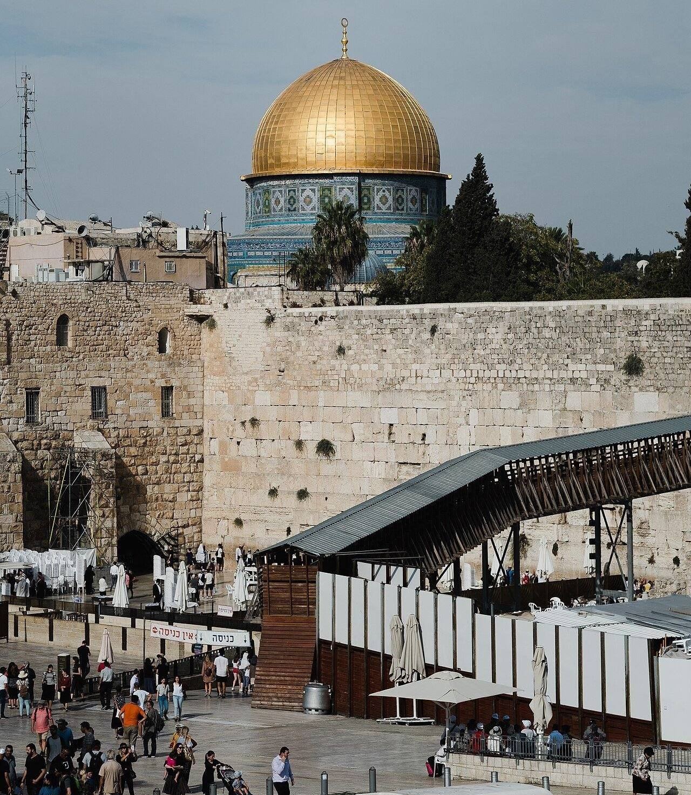
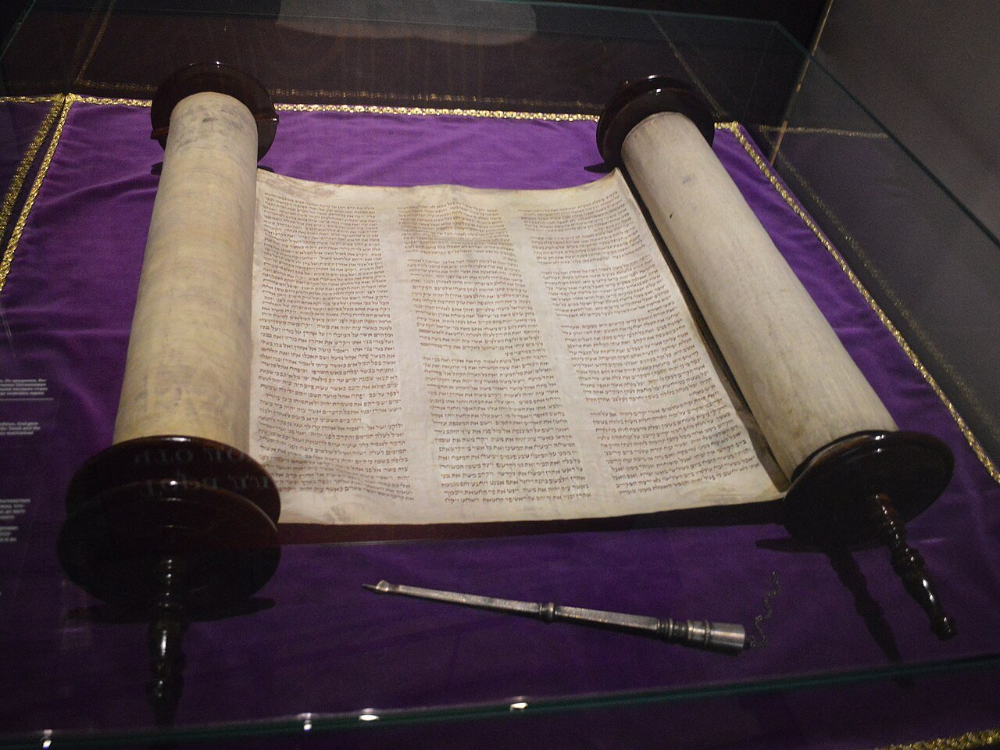
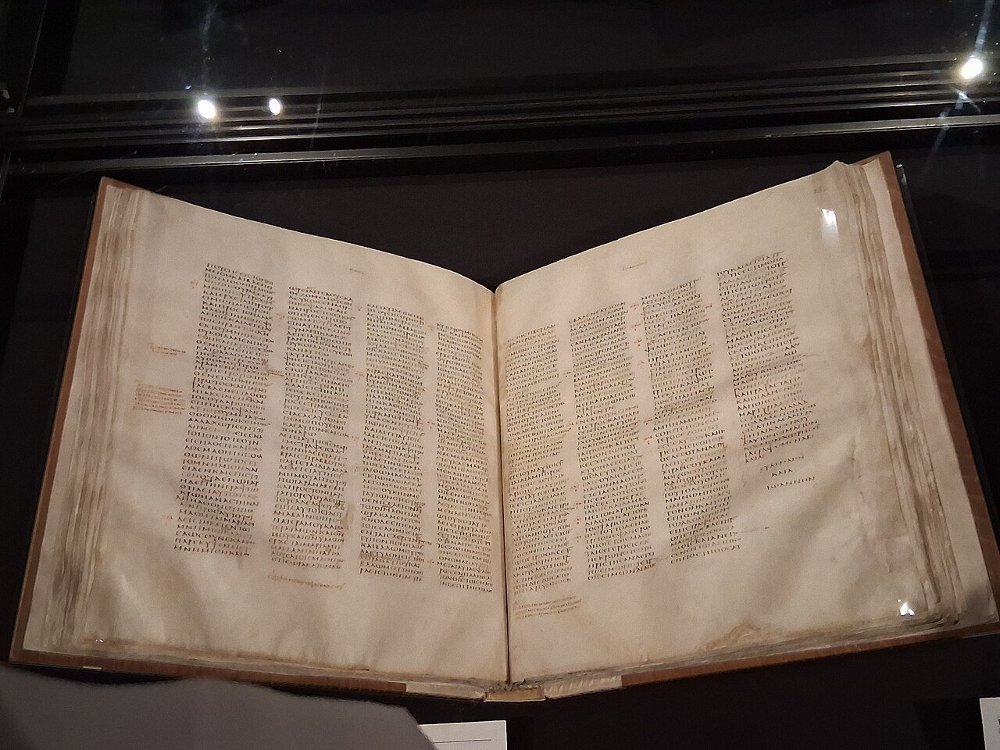
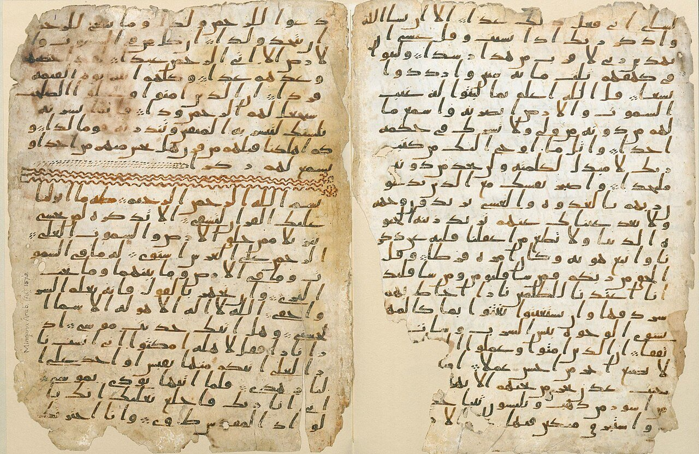
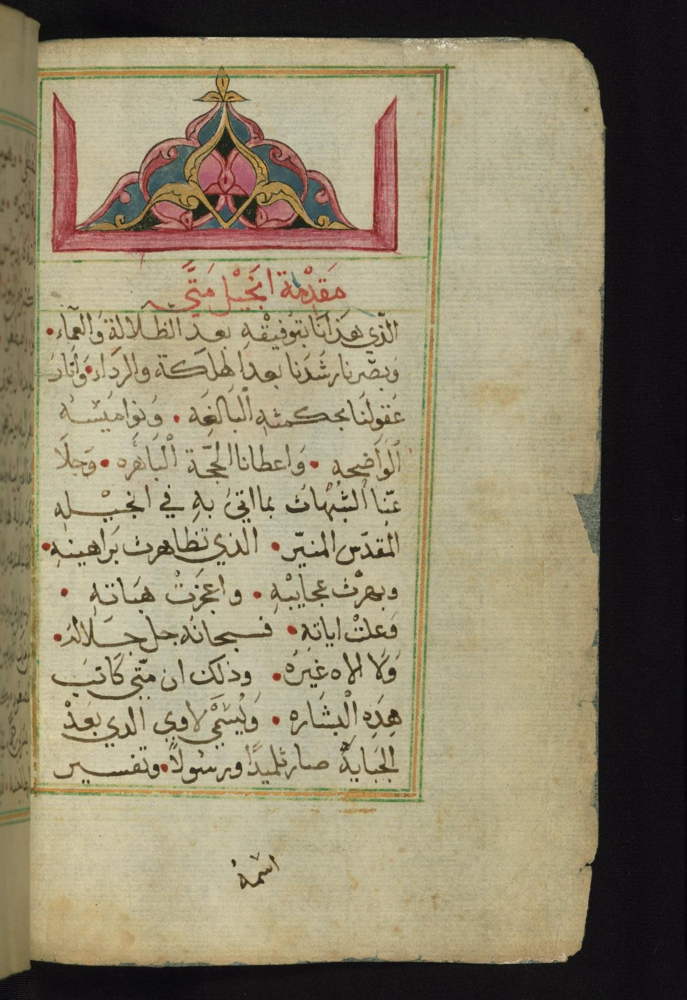
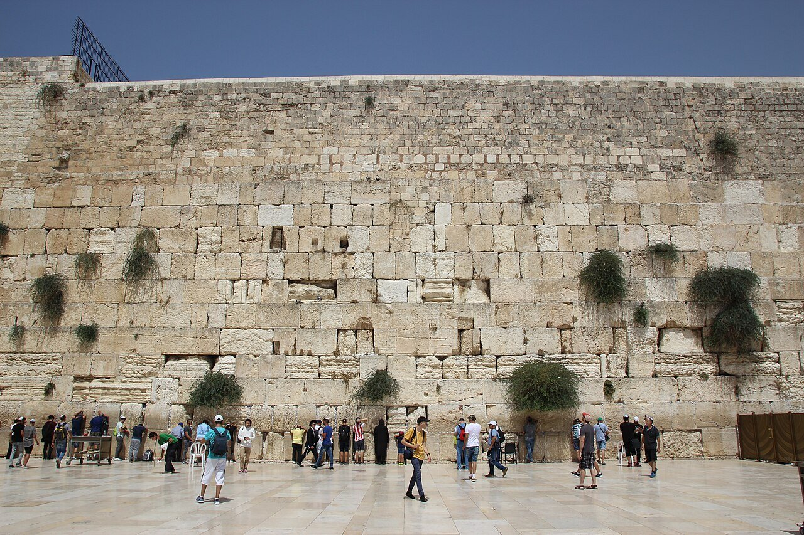
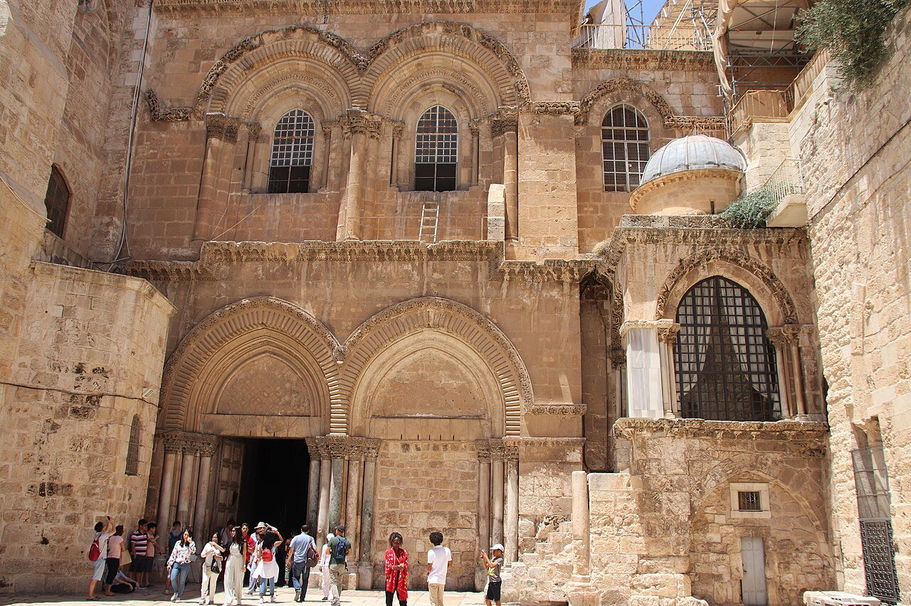
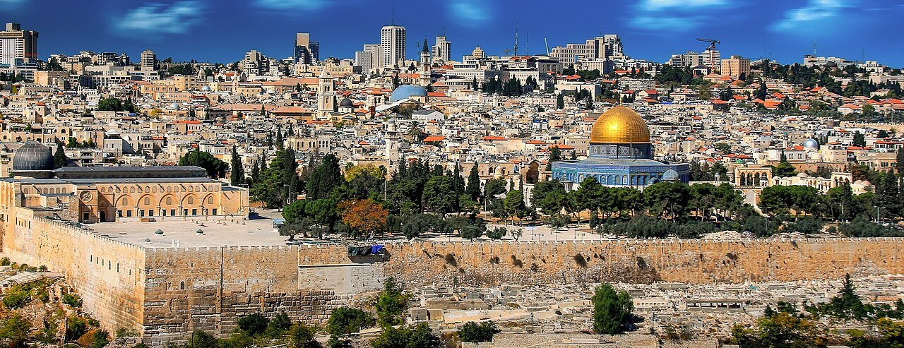

文化・暮らしCulture & Life
キリスト教とイスラム教は、なぜ同じ神を信じている？
イエスもモーセも、じつはコーランに登場します。キリスト教とイスラム教は、なぜ同じ神を信じているのでしょう。1枚の家系図と見方をくらべる表で、そのわけを見てみませんか。
2026.11.28 UP約5分で読める文：SOMOSOMO編集部
写真：西の壁と、奥に岩のドーム／Levi Clancy（2019年、CC0）
エルサレムの旧市街、金曜日の昼。丘の上のアル＝アクサー・モスク（イスラム教の礼拝所）に、イスラム教徒が集まって祈ります。日が沈むと、丘のふもとの「西の壁（嘆きの壁）」で、ユダヤ教の安息日が始まります。そして日曜日の朝には、キリスト教の聖墳墓教会で礼拝が開かれます。
3つの聖地は、城壁に囲まれた同じ旧市街の中に、数百メートルの間をおいて並んでいます。キリスト教とイスラム教は、ふつう別の宗教として語られます。けれども、どちらの信者も、自分たちが祈る神は、ユダヤ教が祈るアブラハムやモーセの神と同じだと考えています。別の宗教なのに、なぜ同じ神を信じているのでしょう。
In a word
どちらも、アブラハムから続く同じ神の物語の上に立つ宗教だから。
01
One Family Tree
3つの宗教は、1枚の家系図に収まる
話は、ユダヤ教の聖書に出てくるアブラハムという人物から始まります。伝承では、いまのイラクのあたりで生まれ、多くの神々がまつられていた時代に、ただ1つの神を信じたとされます。3つの宗教はどれも、彼を信仰の祖先として敬っています。
ユダヤ教の伝承では、アブラハムの子イサクと孫ヤコブから、イスラエル（ヤコブの別の名）の12の部族が生まれました。その子孫が、モーセなどの預言者（神の言葉を人々に伝える人）を通して、ただ1つの神との約束を守ってきた、というのがユダヤ教の考え方です。
1世紀、ユダヤ教徒の1人だったイエスの教えを、弟子たちが広め始めます。これがキリスト教です。キリスト教はユダヤ教の聖書を「旧約聖書」として受け継ぎ、イエスの言葉や生涯を記した「新約聖書」を加えました。
7世紀には、アラビア半島のメッカで、ムハンマドがイスラム教を説きます。世界史の流れの第13話で見た人物です。聖典のコーランは、アブラハムやモーセ、イエスの話をくり返し語り、イスラム教を「アブラハムの宗教」と呼んでいます。
イスラム教では、アブラハムもモーセもイエスも、同じ1つの神の教えを伝えた預言者だと信じられています。



3つの宗教の聖典左から、ユダヤ教の聖書の巻物（19世紀末）、4世紀のギリシャ語の聖書『シナイ写本』、7世紀ごろのコーランの写本。見どころは、文字も形もちがう3冊に、同じアブラハムの話が書かれていること。写真：Torah scroll - Jewish Museum and Tolerance Center／Лапоть（2023年、CC0）、Codex Sinaiticus／PotatoCow25（2026年、CC0）、Birmingham Quran manuscript／作者不明（7世紀ごろ、パブリックドメイン）
アブラハムにはもう1人、イシュマエルという息子がいました。イスラム教の伝承では、アラブの部族の祖先はこのイシュマエルだとされます。3つの宗教を家系図に描くと、こうなります（Fig.01）。
Fig.01アブラハムから広がる家系図
見どころは、黒い線の血筋が2つに分かれても、赤い矢印の教えが3つの宗教をつないでいること。家系図は聖書とコーランの伝承によるもので、歴史の記録ではありません。教えのつながりは歴史の見方で描いたもので、それぞれの宗教の受けとめ方は第2章で見ます。いまのイスラム教徒の多くは、アラブ以外の国の人々です（2020年、約6割がアジア・太平洋に住む。ピュー・リサーチ・センター）。
同じ人物は、コーランでも、アラビア語の名前で登場します。名前の形は少しずつちがっても、物語の主人公は同じです（Fig.02）。
Fig.02聖書の名前と、コーランの名前
見どころは、名前の音がよく似ていること。右の列は、アラビア語での呼び名をカタカナで書いています。
02
Same Name, Different Views
呼び名は同じ。分かれるのはイエスの見方
イスラム教の神「アッラー」は、アラビア語で「神」を表すことばです。アラビア語を話すキリスト教徒やユダヤ教徒も、神をアッラーと呼びます。アラビア語に訳された聖書でも、神はアッラーです。

アラビア語の福音書1684年に作られた、アラビア語の福音書（イエスの生涯を記した書）の写本の1ページです。見どころは、コーランと同じアラビア文字で書かれたキリスト教の本であること。写真：Illuminated Incipit with Headpiece for the Preface to the Gospel of Matthew／イリヤース・バースィム・フーリー・バッズィー（1684年、パブリックドメイン。ウォルターズ美術館蔵）
では、何がちがうのでしょう。大きな分かれ目は、イエスをどう見るかです（Fig.03）。
キリスト教では、イエスは神の子で、救い主（メシア）だと信じられています。神は1つでありながら、父・子・聖霊という3つのあり方をもつ、という「三位一体」の考え方です。
イスラム教では、イエスは偉大な預言者の1人とされます。コーランもイエスを「メシア」と呼びますが、神の子とは見ません。コーランは神に子がいることを否定し、神がただ1つであることを何より大切にします。ユダヤ教は、イエスを救い主とも預言者とも見ていません。
もう1つの分かれ目がムハンマドです。イスラム教では、アブラハムやイエスから続く預言者の、最後の1人とされます。ユダヤ教とキリスト教は、預言者とは認めていません。同じ神を信じていても、神が人に何を伝えたかの受けとり方がちがいます。
Fig.033つの宗教の見方くらべ
見どころは、上の2行が3つとも同じなのに、赤い2行（イエスとムハンマド）で見方が分かれること。それぞれの信者の側から見た考え方をまとめたもので、同じ宗教の中にもさまざまな見方があります。
03
Shared Places
聖地も習慣も、重なり合う
冒頭の3つの聖地も、この家系図の上にあります。西の壁は、ユダヤ教の神殿があった丘を支える壁の一部です。聖墳墓教会は、イエスが十字架にかけられ、葬られ、よみがえったと伝えられる場所に立っています。


ユダヤ教とキリスト教の聖地左は、扉の西の壁を近くから見たところ。見どころは、下のほうの大きな石で、ヘロデ王の時代のものとされます。右は聖墳墓教会の正面の入り口です。この扉の鍵は、1187年からイスラム教徒の一家が預かってきたと伝えられます。写真：左 Jerusalem Old City Western Wall／Gary Todd（2018年、CC0）、右 Church of the Holy Sepulchre／Gary Todd（2018年、CC0）
丘の上の、岩のドームとアル＝アクサー・モスクのある一帯は、ムハンマドが一夜でメッカから旅し、天にのぼったと伝えられる場所です。イスラム教徒は初め、このエルサレムの方角を向いて祈っていました。祈る方角は、のちにメッカに変わります。

丘の上の2つの丸屋根城壁の東から見た旧市街です。左の灰色の丸屋根がアル＝アクサー・モスク、右の金色の丸屋根が岩のドーム。見どころは、手前の城壁の上に広がる平らな広場で、ユダヤ教の神殿があった丘でもあります。写真：Jerusalem／Walkerssk（2017年、CC0）
習慣にも、似たところがあります。断食の習慣も3つにあり、ユダヤ教のヨム・キプル（贖罪の日）、キリスト教の多くの教派の復活祭の前の40日（四旬節）、イスラム教のラマダーン月がよく知られています。
ユダヤ教とイスラム教は、どちらも豚肉を食べることを禁じています。集まって祈る日も、イスラム教は金曜、ユダヤ教は土曜（安息日）、キリスト教は日曜と、1日ずつずれて並びます。
そして、同じ神を信じる人どうしでも、教えの受けとり方は1つではありません。キリスト教にもイスラム教にも、中にいくつもの流れがあります。同じ宗教なのに、なぜ分かれていくのでしょう。
04
By the Numbers
数字で見るアブラハムの宗教
約55%世界の人口のうち、3つの宗教の信者を合わせた割合（2020年）ピュー・リサーチ・センターの推計。キリスト教28.8%、イスラム教25.6%、ユダヤ教0.2%の合計
0.2%世界の人口のうち、ユダヤ教徒の割合（2020年）。人数は約1,480万人で、東京都の人口と同じくらいピュー・リサーチ・センターの推計。東京都は約1,430万人（2026年10月）
0.9km²3つの聖地を囲むエルサレム旧市街の広さ。東京ドーム約19個分Old City of Jerusalem（Wikipedia）による。東京ドームとの比は編集部の計算
Here's the Fun Part
ここが面白い！
コーランで名前が出る女性は、マリアただ1人
コーランには、たくさんの人物が登場します。けれども、名前で呼ばれる女性は、イエスの母マリア（アラビア語でマルヤム）ただ1人です。
コーランには、彼女の名をそのまま題にした「マルヤム章」（第19章）まであります。天使が子の誕生を告げ、マリアがイエスを産む場面も、この章で語られています。キリスト教でおなじみの物語が、イスラム教の聖典の中で、1つの章になっているのです。
クリスマスの飾りや美術館で、赤ちゃんを抱いたマリアの絵を見かけたら、思い出してみてください。その人は、コーランの1章に名前を残す、ただ1人の女性でもあります。